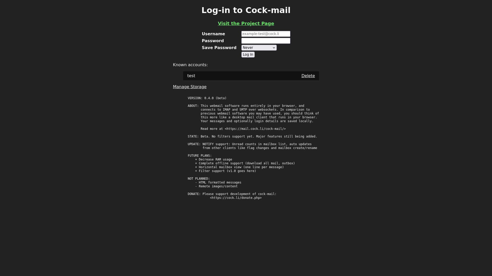
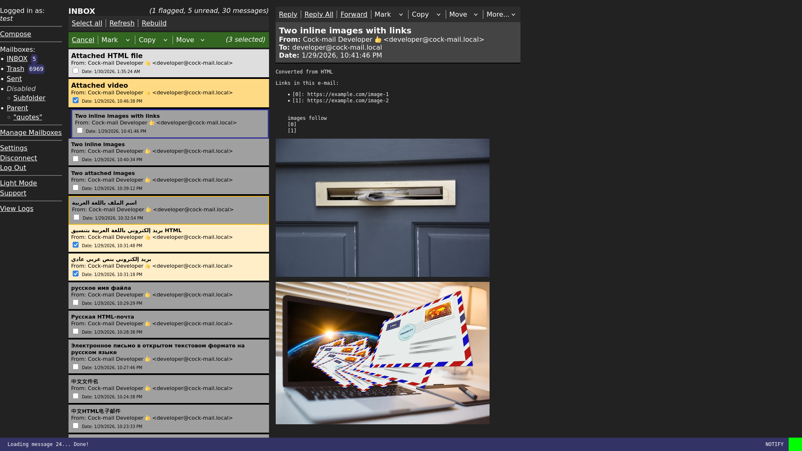
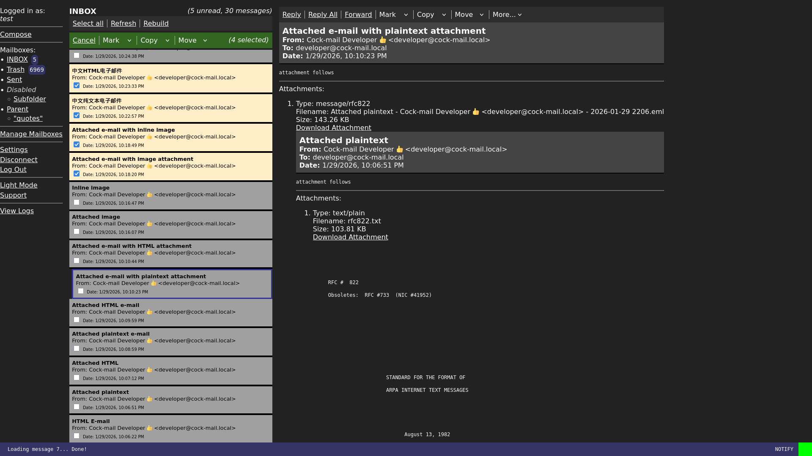
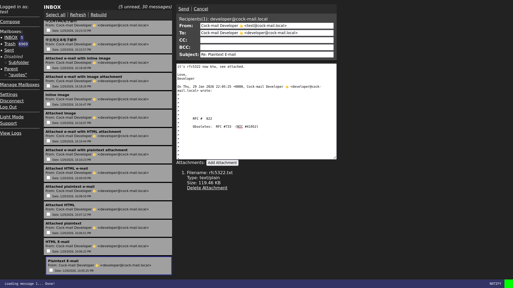

<meta charset="UTF-8" /><title>Cock-mail &mdash; yeah it's webmail with cocks</title>
<style>:root {
    --background: #222;
    --text-color: #FAFAFA;
    --link-color: #FFF;

    --announce-color: #00B400;
    --announce-color-accent: #6EE66E;
    --account-list-background: #111;

    --nav-background: #2D2D2D;
    --nav2-background: #336621;

    --mailbox-message-background: #DEDEDE;
    --mailbox-message-seen-background: #A0A0A0;
    --mailbox-message-checked-background: #FFDA84;
    --mailbox-message-checked-seen-background: #FFEEC8;

    --message-header-background: #444;

    --status-color: #FFF;
    --status-background: #336;
    --status-ok-color: #00FF00;
    --status-load-color: #FFFF00;
    --status-err-color: #FF0000;
}

body {
    background: var(--background);
    font-family: sans-serif;
    color: var(--text-color);
    display: flex;
    flex-direction: row;
    align-items:stretch;
    height: 100%;
    margin: 0;
}
h1 span, h2 span, h3 span, h4 span, h5 span, h6 span {
    font-weight: normal;
}
a, #account li {
    cursor: pointer;
    text-decoration: underline;
    color: var(--link-color);
}

article {
    margin: 0 auto;
    display: inline-block;
    height: fit-content;
    padding-bottom: 2em;
    max-width: 60em;
    line-height: 1.5em;
    padding-left: 2em;
    padding-right: 2em;
}

h1, h2 {
    text-align: center;
}
h2 {
    font-size: smaller;
    font-style: italic;
}
h4 {
    font-weight: bold;
    color: var(--announce-color);
}
h4 a {
    color: var(--announce-color-accent);
    font-weight: bolder;
}

p {
    text-align: justify;
}

section.about p {
    text-indent: 2em;
}

b {
    color: var(--link-color);
}

p b {
    font-style: italic;
}

.screenshot {
    display: inline-block;
    text-align: center;
    width:50%;
    box-sizing:border-box;
}
.screenshot + .screenshot {
    margin-top: 1em;
}
.screenshot input + img {
    display:none;
}
.screenshot img {
    max-width: 100%;
    max-height:100%;
    border: 1px solid var(--account-list-background);
}
.screenshot input {
    display: none;
}
.screenshot input:checked + img {
    display: block;
    position: fixed;
    top: 50%;
    left: 50%;
    transform: translate(-50%,-50%);
    max-width:90%;
    border: 6px solid var(--account-list-background);
    box-shadow: 0 0 100px 25px #000;
}
ul {
    margin-left: 2em;
}
</style>
<article>
    <h1>Cock-mail &mdash; yeah it's webmail with cocks</h1>
    <h2>est. 2026</h2>
    <section class="about">
        <h4>About</h4>
        <p>
            <strong><b>Cock-mail</b> is the world's first fully client-side webmail
            client.</strong> It's what webmail should have been. <b>Cock-mail</b> connects
            directly to IMAP and SMTP over WebSockets and manages the entire session in
            your browser from start to finish. This approach eliminates a broad stroke of
            security risks you take every time you use a server-side webmail application.
            Instead of relying on a crusty PHP or C backend to log in for you and manage
            client state, <b>cock-mail</b> speaks mail protocols natively and skips the
            middleman.
        </p><p>
            Another problem with webmail is the issue of how to convert an HTML e-mail into
            something that can be safely displayed in browsers. This is a <i>hard</i>
            problem and has been the source of innumerable XSS vulnerabilities in existing
            webmail applications. <b>Cock-mail</b> addresses this by <i>refusing to convert
            HTML to anything other than plaintext</i>. More specifically its HTML converter
            uses <code>DOMParser</code> to parse HTML message parts, extract links, and
            convert the untrusted code to plaintext with <code>innerText</code>. This way
            the features of modern browsers designed to handle untrusted input are used for
            their intended purpose.
        </p><p>
            This is not a hobby project; it's developed so our own users can access webmail.
            We shut down our previous choice of software after we briefly audited it and
            decided it was too dangerous to use. If we had another option we would have
            deployed it as a replacement. Extensive research over several months came up
            with nothing that met our requirements and so we started writing
            <b>cock-mail</b> instead.
        </p><p>
            <b>Cock-mail</b>'s developers strongly believe the best e-mail client is a
            desktop client and aim to replicate one.
        </p>
    </section>
    <section class="features">
        <h4>Features</h4>
        <p>
            <b>Cock-mail</b> is in beta state. It can send and receive mail but there's no
            filter support yet. Here's a list of interesting features:
        </p>

        <ul>
            <li>NOTIFY support (watch for new/removed/changed messages and unread count on all mailboxes)</li>
            <li>Mark messages as Un/read, Un/flagged, and Deleted</li>
            <li>Move and copy messages</li>
            <li>Bulk mail controls with checkbox or Ctrl/Shift select</li>
            <li>Convert HTML e-mail to plaintext and show extracted links</li>
            <li>MIME decoding, split into inline/attachment parts</li>
            <li>Display images/videos/messages inline or as attachment</li>
            <li>Vew message headers, full source, and download message to file</li>
            <li>Complete charset support (intl+unicode headers, body, filenames)</li>
            <li>Management of locally stored data</li>
            <li>Receive notifications on new mail</li>
            <li>Mobile/portrait layout</li>
            <li>Send e-mails with attachments</li>
            <li>Create/Delete/Rename/Reorder mailboxes</li>
        </ul>

        <p>
            Here's the rough order new features will arrive in:
        </p>

        <ul>
            <li>Complete offline support (drafts, download all mail, outbox)</li>
            <li>Horizontal mailbox view (one line per message)</li>
            <li>Filter support <b>(v1.0 goes here)</b></li>
        </ul>

        <p>
            These features will <i>never</i> be added to <b>cock-mail</b>:
        </p>

        <ul>
            <li>Rich HTML formatting (HTML is converted to plaintext)</li>
            <li>Remote images/content</li>
        </ul>
    </section>

    <section class="screenshots">
        <h4>Screenshots</h4>
        <p>
            Click on an image to enlarge it.
        </p>
        <label for="screenshot-login" class=screenshot>
            <input type=checkbox id="screenshot-login"/>
            
            
        </label><label for="screenshot-images" class=screenshot>
            <input type=checkbox id="screenshot-images"/>
            
            
        </label><label for="screenshot-attachedemail" class=screenshot>
            <input type=checkbox id="screenshot-attachedemail"/>
            
            
        </label><label for="screenshot-compose" class=screenshot>
            <input type=checkbox id="screenshot-compose"/>
            
            
        </label>
    </section>

    <section class="download">
        <h4>Download</h4>
        <p>
            <i>Current version: 0.5.1 (beta)</i>
        </p><p>
            <b>Cock-mail</b> is a single HTML file. If you are connecting to existing
            WebSocket endpoints all you need is 
            <a href="view-source:https://mail.cock.li/">view-source:https://mail.cock.li/</a>.
            Configure your endpoints at the bottom of the file.
        </p><p>
            If you would like to deploy <b>cock-mail</b> for access to a mail server without
            existing WebSocket support, you can download the complete package. It uses
            <code>docker</code> to build a base image from scratch and <code>docker
            compose</code> to build and deploy a patched version of <code>websockify</code>
            which adds support for <code>--haproxy=2</code> and
            <code>--ssl-target-name=mail.example.com</code>. Using docker isn't necessary
            and if you know what you like you're probably smart enough to figure it out.
        </p><p>
            <a href="dist/cock-mail-0.5.1.tar.gz">cock-mail-0.5.1.tar.gz</a> (300KB, 60KB compressed)
        </p><p>
            Complete build instructions can be found in <code>README.txt</code>.
        </p><p>
            <b>Cock-mail</b> is free to use under a broadly permissive license you can read
            at the top of <code>index.html</code>.
        </p>
    </section>
    <section class=donate>
        <h4>Donate</h4>
        <p>
            You can support the development of <b>cock-mail</b> by <a href="../../cock.li/donate.php.html">donating to cock.li</a>.
        </p>
    </section>
    <section class=updates>
        <h4>Updates</h4>
        <h5>0.5.1 <span>&mdash; 2026-03-30</span></h5>
        <ul>
            <li>
                Fix a bug displaying multipart/encrypted messages
            </li>
        </ul>
        <h5>0.5.0 <span>&mdash; 2026-03-21</span></h5>
        <ul>
            <li>
                Decrease RAM by keeping message bodies in memory only while open
            </li><li>
                Open mailboxes in roughly O(n) time, tested up to 100k messages
            </li><li>
                Send (customizable) User-Agent header when sending mail
            </li><li>
                Add MessageHeaders class to avoid casting names to lowercase and support duplicate headers
            </li>
        </ul>
        <h5>0.4.0 <span>&mdash; 2026-03-14</span></h5>
        <ul>
            <li>
                Add NOTIFY support for more complete mailbox updates
            </li><li>
                Live unread counts in mailbox list
            </li><li>
                Auto updates from other clients like flag changes and mailbox create/rename/delete
            </li><li>
                Show progress when loading large mailboxes
            </li><li>
                Handle all untagged responses
            </li><li>
                Real IMAP protocol parsing
            </li><li>
                Disable IDLE since NOTIFY replaces it
            </li>
        </ul>
        <h5>0.3.2 <span>&mdash; 2026-02-22</span></h5>
        <ul>
            <li>
                Fix a bug where new mail doesn't automatically appear if latency is high enough
            </li>
        </ul>
        <h5>0.3.1 <span>&mdash; 2026-02-21</span></h5>
        <ul>
            <li>
                "View Logs" prompt with loglevel filtering, download, copy, and "send to support" features
            </li><li>
                Switch to internal logging, increases performance over console.log
            </li><li>
                Add literal support to LIST parser and mailbox escaping. You can now use a mailbox named <code>\\\\"""\"\""\\"""\"\""\</code>.
            </li><li>
                Load mailboxes faster
            </li><li>
                Load all templates at init
            </li><li>
                You can now send e-mail to addresses without an '@' (mail server supporting)
            </li><li>
                Fix a bug saving mailbox order
            </li><li>
                Fix a crash when a command is queued while waiting for initial IDLE response
            </li>
        </ul>
        <h5>0.3.0 <span>&mdash; 2026-02-18</span></h5>
        <ul>
            <li>
                Display subfolders in tree format
            </li><li>
                Create/Delete/Rename/Reorder mailboxes
            </li><li>
                Basic support for IMAP Namespaces
            </li><li>
                Flag controls (Un/read, Un/flagged, Delete)
            </li><li>
                Filter (for now) unsolicited CONDSTORE responses. Fixes a crash when you
                receive a message while fetching that mailbox.
            </li><li>
                Make some ImapClient methods generic
            </li><li>
                Remove initImap() as it was implemented into the views. A generic example
                showing how to use ImapClient etc. will be added one day.
            </li>
        </ul>
        <h5>0.2.0 <span>&mdash; 2026-02-16</span></h5>
        <ul>
            <li>
                    Send e-mails with attachments
            </li><li>
                    Account settings (name, signature, reply top/bottom, reply
                    signature)
            </li><li>
                    Rework views to use templates
            </li><li>
                    Formally close SMTP connections
            </li><li>
                    Portrait view improvements
            </li><li>
                    Decode MIME parameters at the end of continuations, fixes a
                    bug where a filename containing unicode characters split
                    across MIME parameter continuations decodes incorrectly
            </li>
        </ul>
        <h5>0.1.0 <span>&mdash; 2026-02-12</span></h5>
        <ul>
            <li>
                    Send e-mail with SMTP
            </li><li>
                    Save sent messages to the Sent special-use mailbox (create if needed)
            </li><li>
                    Reply/all/list, forward, and compose links
            </li><li>
                    Prompt to re-enter password if you didn't save it
            </li>
        </ul>
        <h5>0.0.6 <span>&mdash; 2026-02-07</span></h5>
        <ul>
            <li>
                    Add handlers for the different response types. This means
                     in the future mailboxes can build one by one instead of
                     adding all messages at the end.
            </li><li>
                    Rework response buffer to keep bytes instead of text. This
                     fixes a bug where unicode characters broken across two
                     websocket messages would break the client.
            </li><li>
                    Connection management (disconnect, reconnect, logout)
            </li><li>
                    Notifications on new mail
            </li><li>
                    Migrate storage to indexedDB and auto-delete localStorage
            </li><li>
                    Message bodies are now stored thanks to fatter storage
            </li><li>
                    Storage Management screen showing bytes used and ability
                     to delete individual databases
            </li><li>
                    Mobile/portrait layout
            </li><li>
                    Queue all commands and responses. Fixes bugs like
                     undefined behavior if you click a message while a new
                     mailbox is loading.
            </li>
        </ul>
        <h5>0.0.5 <span>&mdash; 2026-01-29</span></h5>
        <ul>
            <li>
                MIME decoding and display. More or less implements RFCs
                2045, 2046, 2047, 2183, and 2231.
            </li><li>
                Inline and attachment view of message parts
            </li><li>
                Image/Video/Message embedding and display
            </li><li>
                Convert HTML e-mail to plaintext and extract links
            </li><li>
                Download raw e-mail to file
            </li><li>
                Settings window to disable media rendering
            </li>
        </ul>
        <h5>0.0.4 <span>&mdash; 2026-01-25</span></h5>
        <ul>
            <li>
                Bulk mail controls (Mark un/read, Trash, Delete)
            </li><li>
                Ctrl/Shift message select support
            </li><li>
                Message counts for current mailbox
            </li><li>
                Toggle raw headers
            </li>
        </ul>
        <h5>0.0.3 <span>&mdash; 2026-01-24</span></h5>
        <ul>
            <li>
                Set Message flags (only Unread, Deleted)
            </li><li>
                Make use of mailbox special use flags (like \Trash)
            </li><li>
                Move message to Trash (and create if needed)
            </li><li>
                Fix handleResponseBuffer performance
            </li><li>
                Fix random IDLE breaks
            </li>
        </ul>
        <h5>0.0.2 <span>&mdash; 2026-01-23</span></h5>
        <ul>
            <li>
                RFC 2047 MIME encoded-word support
            </li><li>
                Correct byte reading for UTF-8 Content-Type support
            </li>
        </ul>
        <h5>0.0.1 <span>&mdash; 2026-01-20</span></h5>
        <ul>
            <li>
                Initial Release
            </li>
        </ul>
    </section>
</article>
<script>
    for(const el of document.querySelectorAll('.screenshot input')) {
        el.checked = false;
    }
</script>
